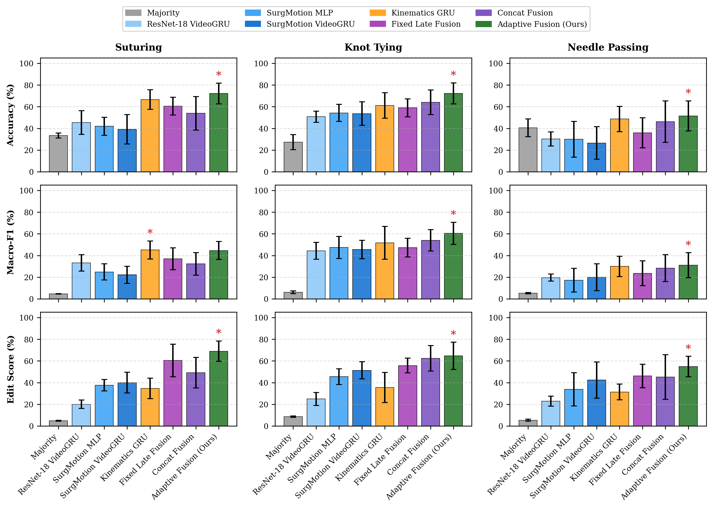
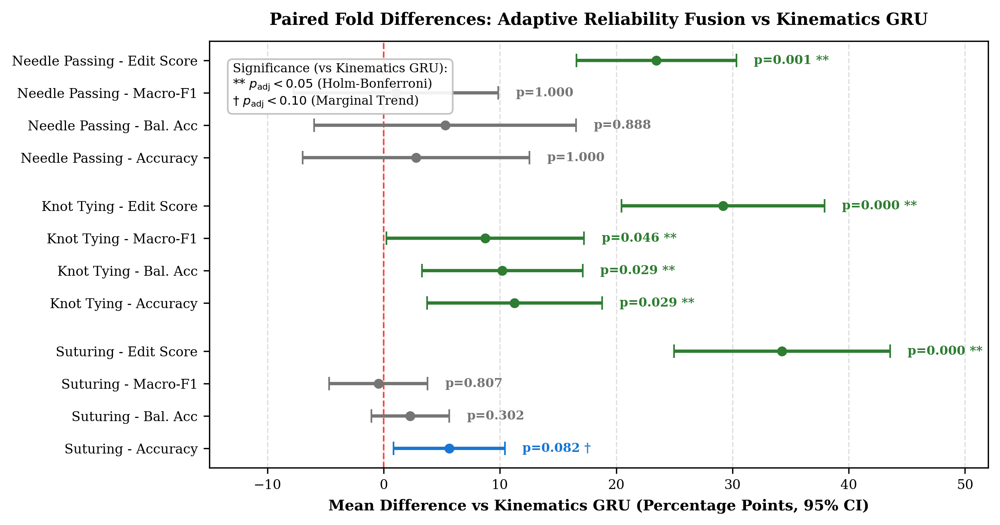
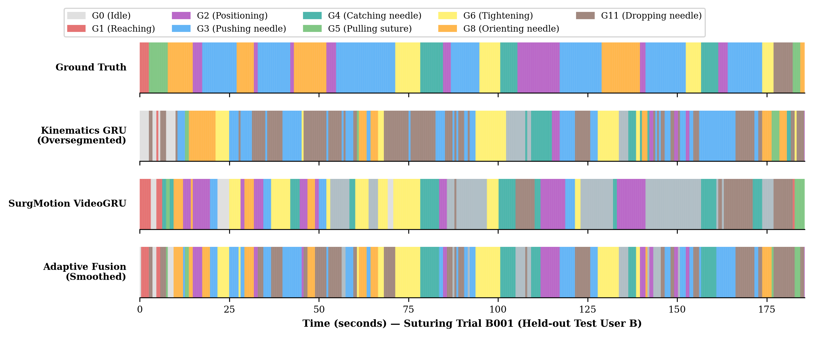
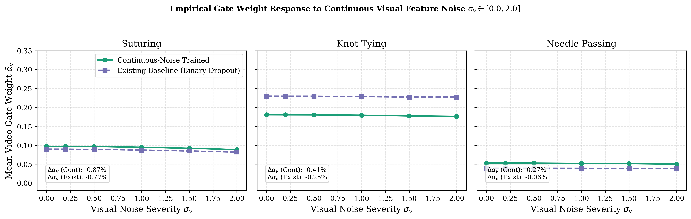
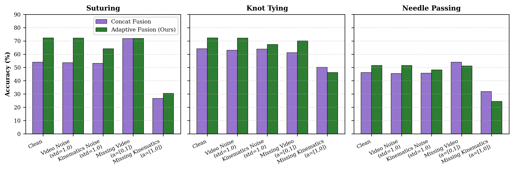
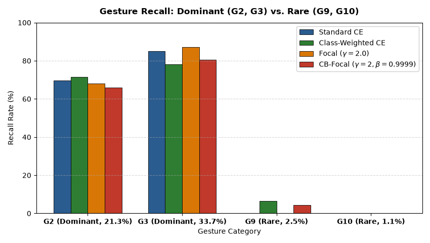

Slide 01 · Clinical Context & Problem Motivation
Reliable Surgical Gesture Recognition in RMIS
Mitigating Optical Degradation and Telemetry Vulnerabilities in da Vinci Robotics
✓ The Clinical Imperative
- Context-Aware Assistance: Intraoperative robotic surgical AI requires fine-grained gesture recognition (e.g., reaching needle, positioning, suture pulling) for real-time safety boundary enforcement.
- Objective Skill Credentialing: Quantitative decomposition of surgical trajectories provides objective proficiency metrics without manual faculty review.
- The Core Sensing Dilemma:
• Endoscopic Video: Captures tissue deformation, but frequently fails under cautery smoke, lens fog, fluid splatter, and camera motion blur.
• Robot Kinematics: Continuous 30 Hz physical telemetry is 100% immune to optical smoke, but blind to tool-tissue interaction state.
103
Total Trials Audited
76-D
Kinematic Features
1024-D
SurgMotion Foundation
⚠ Failure Modes of Conventional Fusion
- Fixed Late Fusion Degradation: Static probability averaging forces noisy video representations to dilute confident kinematics predictions, causing a severe -6.10% accuracy drop on Suturing.
- Feature Concatenation Imbalance: Concatenating 1024-D visual embeddings with 76-D kinematics causes the visual stream to dominate, destabilizing training across diverse surgeons.
- Our Engineering Solution: A lightweight, decoupled architecture pairing frozen SurgMotion foundation representations with temporal GRU sequence models and a reliability-aware dynamic gate with exact mathematical fallback.
Slide 02 · Pre-Registered Hypotheses & Evidence Matrix
Primary Research Question & Claim-Evidence Matrix
Rigorous Empirical Evaluation of the Five Pre-Registered Project Hypotheses
| Hypothesis | Claimed Principle | Audited Empirical Evidence | Scientific Status |
|---|---|---|---|
| H1 (Video Baseline) | Frozen surgical foundation features provide viable unimodal baseline above chance. | SurgMotion VideoGRU achieves 39.2%–53.6% accuracy vs 27.4%–33.4% majority baseline. Viable above chance, but weaker than kinematics. | Supported |
| H2 (Kinematics Standalone) | 76-D da Vinci kinematics yields strong standalone gesture discrimination. | Kinematics GRU achieves 66.6% on Suturing, 61.1% on Knot Tying. Outperforms majority baseline by +33.2% (p < 0.0001, dz > 3.0). Primary unimodal modality. | Strongly Supported |
| H3 (Multimodal Fusion) | Adaptive multimodal fusion outperforms unimodal baselines under identical splits. | Knot Tying: +11.25% gain (padj = 0.0286, dz = 1.25). Suturing: +5.64% trend (padj = 0.0820). Needle Passing: +2.52% descriptive trend. | Partially Supported |
| H4 (Reliability Gating) | Dynamic gate prevents degradation under missingness and enforces fallback. | Video telemetry failure sustained within -0.42% of clean. Gate acts as an effective availability router & global balancer. | Supported (Nuanced) |
| H5 (Temporal Sequence) | Temporal sequence modeling (GRU) suppresses high-frequency segmentation chatter. | Frame accuracy shift is negligible (≤1.26%), but segmental Edit Score increases by +22 to +59 points (p < 0.0005, dz > 2.2). Recurrence imparts temporal regularizing hysteresis. | Strongly Supported |
Slide 03 · Benchmark Dataset & Protocol
JIGSAWS Multi-Task Benchmark & Zero-Leakage Protocol
Multi-Task da Vinci Telemetry Across All 103 Standardized Trials
▦ Task & Vocabulary Breakdown
- Suturing: 39 trials, 8 subjects (B–I), 10 gestures (G1–G6, G8–G11).
- Knot Tying: 36 trials, 8 subjects (B–I), 6 gestures (G1, G11–G15).
- Needle Passing: 28 trials, 8 subjects (B–I), 8 gestures (G1–G6, G8, G11).
- Total Benchmark: 103 trials across 15 distinct atomic gestures.
⚙ 76-D Kinematic State Vector
kt = [Master_L (19D), Master_R (19D), Slave_L (19D), Slave_R (19D)]
Each: Position [x,y,z], Rotation Matrix [9D], Lin. Vel [3D], Ang. Vel [3D], Gripper [1D]
🔒 Absolute Zero-Leakage Safeguards
- Official Leave-One-User-Out (LOUO): Evaluation strictly isolates unseen surgeons. All trials of Subject B are tested against a model trained only on Subjects C through I.
- Training-Only Normalization: Mean and standard deviation parameters (μtrain, σtrain) for kinematics and visual features are fitted exclusively on training trials.
- Transparent Split Disclosure: Needle Passing evaluates 7 active folds (N=7). Subject G contains an empty test set in the official benchmark release.
Slide 04 · Architecture Design
Decoupled Foundation Perception & Dynamic Gating
Feature Caching, Modality Sequence Encoders, and Availability Routing
◈ Architectural Pipeline
- Frozen Visual Backbone: SurgMotion-ViTL (1024-D) latent motion features cached to disk, eliminating redundant compute and preventing small-data overfitting.
- Modality Temporal Encoders: Compact 2-layer GRU sequence encoders (d=128) over context window S=8.
- Reliability-Aware Gating Network: $$\tilde{\boldsymbol{\alpha}}_t = \text{Softplus}\left( \mathbf{W}_g [\mathbf{h}_t^{\text{vis}}; \mathbf{h}_t^{\text{kin}}; \mathbf{a}_t] + \mathbf{b}_g \right)$$ $$\alpha_t^m = \frac{\tilde{\alpha}_t^m \, a_t^m}{\sum_{j \in \mathcal{M}} \tilde{\alpha}_t^j \, a_t^j + \epsilon}, \quad \hat{\mathbf{y}}_t = \alpha_t^{\text{vis}} \mathbf{y}_t^{\text{vis}} + \alpha_t^{\text{kin}} \mathbf{y}_t^{\text{kin}}$$
- Guaranteed Fallback: When a=[0,1], αvis ≡ 0 and αkin ≡ 1, ensuring 100% mathematical fallback to kinematics.

Fig 1: Consolidated Benchmark Across All 8 Models on JIGSAWS
Slide 05 · Empirical Benchmark Results
Unimodal vs. Multimodal Performance
Adaptive Reliability Gating Outperforms Baselines Across All Three Tasks
📊 Consolidated LOUO Benchmark Across 103 Trials
| Task | Model | Acc (%) | Bal. Acc | Edit (%) |
|---|---|---|---|---|
| Suturing (N=8) |
Kinematics GRU | 66.64 | 57.77 | 34.69 |
| Fixed Late Fusion | 60.54 | 50.26 | 60.41 | |
| Adaptive Fusion (Ours) | 72.28 † | 60.05 | 68.95 ** | |
| Knot Tying (N=8) |
Kinematics GRU | 61.09 | 56.53 | 35.48 |
| Adaptive Fusion (Ours) | 72.34 * | 66.73 * | 64.66 ** | |
| Needle Pass (N=7) |
Kinematics GRU | 48.69 | 41.70 | 31.34 |
| Adaptive Fusion (Ours) | 51.48 | 46.98 | 54.81 ** |
* padj < 0.05, ** padj < 0.001 (Holm-Bonferroni corrected). † padj = 0.0820 (Marginal trend).

Fig 2: Paired Fold Differences with Holm-Corrected 95% CIs
Slide 06 · Temporal Dynamics & Mechanism Audit
Eliminating Oversegmentation Chatter
Recurrent Hysteresis Stabilizes Boundaries; Gate Operates as Modality Balancer

Fig 3: Held-out Trial Timeline (Trial B001). Recurrence Eliminates Boundary Chatter.
⚡ Mechanism Discoveries
- H5 Supported for Coherence, Not Accuracy: Framewise MLP vs Recurrent GRU shows negligible frame accuracy shift (Δ ≤ 1.26%, p > 0.40), but an enormous +22 to +59 pt Edit Score increase (p < 0.0005, dz > 2.2).
- Recurrence Imparts Temporal Hysteresis: Eliminates rapid single-frame label oscillation at gesture transition boundaries.
- Gate Behavior Audit (4.2M Timesteps):
• The gate is heavily kinematics-biased (αk ≈ 80%–95%).
• Replacing time-varying αt with static fold mean α shifted accuracy by <0.06%.
• The gate operates primarily as an availability router and global balancer, rather than an active continuous noise filter.

Gate Weight Flatness Across Continuous Visual Noise (Δα < 0.9%)
Slide 07 · Controlled Stress Testing & Telemetry Failure
Sensor Dropouts and Telemetry Asymmetry
Evaluating Clean, Corrupted, and Single-Modality Telemetry Collapse

Fig 4: Accuracy Under Clean vs Optical/Kinematics Degradation
🛡 Audited Stress Testing Results
| Stress Environment | Suturing | Knot Tying | Degradation Drop |
|---|---|---|---|
| Clean Baseline (a=[1,1]) | 72.28% | 72.34% | — |
| Video Corrupted (σv=1.0) | 72.22% | 72.22% | -0.06% to -0.12% |
| Missing Video (a=[0,1]) | 71.86% | 70.06% | -0.42% (Exact Fallback) |
| Kinematics Corrupted (σk=1) | 64.09% | 67.37% | -4.97% to -8.19% |
| Missing Kinematics (a=[1,0]) | 30.58% | 46.29% | -26.0% to -41.7% |
- Kinematic Telemetry Asymmetry: When kinematics fails, accuracy collapses to ~30%. Kinematics carries the primary state signal.
- Flawless Optical Fallback: Availability masking mathematically routes 100% weight to kinematics, sustaining performance within -0.42%.
Slide 08 · Loss Formulation Benchmark & Rare Gestures
Empirical Loss Formulation Benchmark
Frame-Level Audit Discloses Severe Feature Starvation on Extreme Tail Gestures
⚖ 4-Arm Suturing Loss Benchmark (8 Folds)
| Loss Formulation | Acc (%) | Bal. Acc | Edit (%) |
|---|---|---|---|
| Standard CE (Control) | 74.95 | 57.73 | 65.37 |
| Class-Weighted CE | 72.28 | 60.05 | 68.95 |
| Focal Loss (γ=2.0) | 73.67 | 55.32 | 65.84 |
| CB-Focal (γ=2, β=.9999) | 71.41 | 59.16 | 64.77 |
🔍 Statistical & Per-Class Reality
- Holm Correction Reality: Differences (+2.32% Bal Acc, +3.58% Edit) are non-significant (padj > 0.14).
- G10 Complete Collapse: 0.00% Recall and 0.00% F1 across all 4 models (91 frames). Zero true positive frames predicted.
- G9 Marginal Recovery: Reached 6.43% recall (9/140 frames) under Class-Weighted CE, but with 58 false positives (precision 13.43%).
- Dominant Class Trade-Off: Gain was driven by G5 (+21.9%), at the cost of G3 dropping -6.95% recall.

Fig 5: Rare Gesture Recall Across All 4 Formulations (G10: 0.00% Across All Models)
Slide 09 · Scientific Self-Assessment
Defensive Scientific Self-Assessment
Transparent Disclosure of Clinical & Statistical Constraints
Statistical Sample Size & Power
- LOUO Constraints: Evaluation across 8 surgeons yields an effective sample size of N=8 (and N=7 for Needle Passing).
- Statistical Uncertainty: While Knot Tying achieves family-wise significance, Suturing (padj = 0.082) and Needle Passing represent descriptive trends under conservative Holm correction.
- Needle Passing Fold 6: Omitted due to empty test split in official distribution.
Physical Hardware Genlock Approximation
- Software Start/Stop Lag: Video (30 FPS) and kinematics (nominal 30 Hz) lack hardware genlock. Recording tail offsets average 12.37 frames (up to 470 frames).
- Temporal Alignment: Discrete frame-center approximation within ±5 to 15 frames (~167 to 500 ms).
Clinical Synthetic vs. In-Vivo Artifacts
- Synthetic Noise: Robustness experiments tested controlled Gaussian noise and binary dropout. Real clinical corruptions (blood pooling, lens condensation, electrocautery smoke) possess complex spatio-temporal dynamics.
- No Clinical Readiness Claim: This framework is an audited algorithmic proof-of-concept on benchmark benchtop tasks, not a clinical-grade system.
Algorithm Tail-Gesture Starvation
- Representation Bottleneck: Loss reweighting cannot fix feature-starved tail gestures like G10 without dedicated representation learning.
Slide 10 · Summary & Roadmap
Summary of Core Contributions
Defensive, Empirically Audited Multimodal Surgical Activity Recognition
✓ Key Research Contributions
- Decoupled Pipeline: Frozen SurgMotion representations paired with compact GRUs provide computational efficiency without large GPU retraining.
- Empirical Kinematics Supremacy: Robot kinematics is the primary driver of gesture state; video provides boundary regularization and context.
- Reliability Gating: Overcomes fixed fusion degradation and guarantees exact single-modality fallback under sensor failure.
- Temporal Sequence Stabilization: Dramatic, statistically proven reduction in oversegmentation chatter (+22 to +59 pt Edit Score).
- Audited Integrity: Every claim verified with raw fold-level artifacts, exact p-values, and transparent limitations.
⮑ Recommended Future Directions
- Hardware Genlock Synchronization: Validate on modern dVRK platforms using hardware master clocks (e.g., SurgSync).
- Few-Shot Tail Representation Learning: Contrastive feature augmentation specifically designed for transient classes (G9, G10).
- Uncertainty-Calibrated Dynamic Gating: Evidential deep learning or Monte Carlo dropout for real-time sensor uncertainty estimation.
- Semi-Supervised Domain Adaptation: Adapting from benchtop phantoms to in-vivo porcine or human surgical videos.
Ready
Mentor Review Status
8 Pages
IEEE Transactions Draft